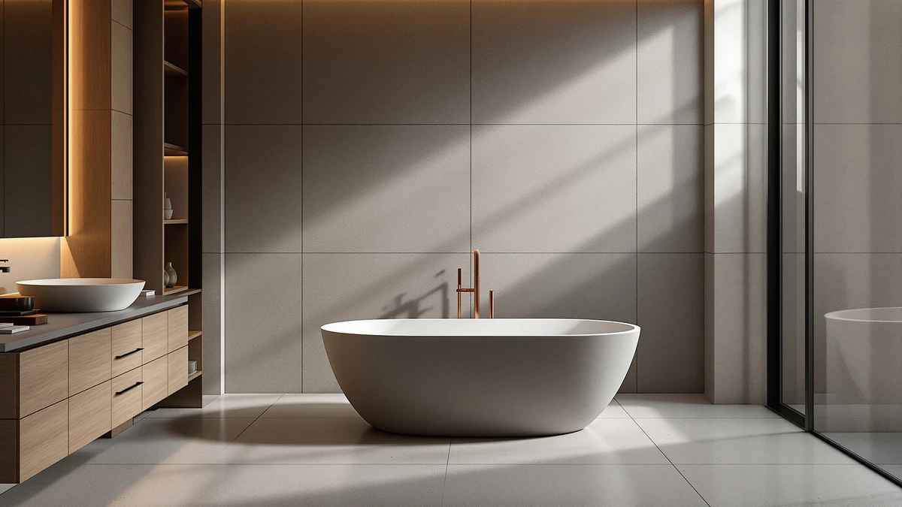

MUIRYN 71 '' Stone Review (2026): Worth It?
Prices and picks verified as of October 2026. Independent, reader-supported reviews.


Quick Answer
The MUIRYN 71'' Stone Resin tub gives you a full 71-inch soak in a composite stone finish for $1,399.99, a fair price for the category but roughly $600 more than the acrylic alternatives below. Choose it if you want the weight, feel and matte finish of stone resin in a true full-size tub; choose an acrylic model instead if floor loading or budget rules out the heavier composite.
Our pick: MUIRYN 71 '' Stone Resin, $1,399.99 Check Price on Amazon
Bottom line: our top pick is the MUIRYN 71 '' Stone Resin Freestanding Bathtub at $1,399.99.
Things to Know Before You Buy
- The MUIRYN 71'' Stone Resin measures 70.87 by 34.45 by 21.65 inches, so measure your alcove or floor space before ordering. Stone resin tubs are heavy and awkward to return once delivered.
- At $1,399.99, it costs roughly $600 more than the 67-inch acrylic options in this comparison, a premium you pay for the stone composite shell rather than extra capacity.
- Stone resin weighs considerably more than acrylic, so confirm your subfloor can support the tub plus a full basin of water before installation.
- The listing does not publish a gallon capacity or an independently verified star rating, so size, material and price are the facts you can check directly against the spec sheet.
- Freestanding stone resin tubs typically ship with the drain and overflow kit sold separately, so budget for that add-on alongside the tub price.
If you're reading a muiryn 71 '' stone review before spending $1,399.99, you want to know whether this specific stone resin tub beats the acrylic options sitting right next to it in price comparisons. We compared the MUIRYN 71'' Stone Resin against three other freestanding tubs on dimensions, material and price to answer that directly. The short version: it's a strong pick if you want a full 71-inch stone resin soak, and not the best value if 67 inches of acrylic will do.
Freestanding tubs in this price range split into two camps: acrylic shells that keep cost and weight down, and stone resin or solid surface shells that cost more but feel heavier and more substantial underfoot. The MUIRYN 71'' Stone Resin sits in the second camp at 70.87 by 34.45 by 21.65 inches, large enough for a full stretched-out soak rather than the curled-up position many compact tubs force on taller bathers. Below, we break down what that extra length and material actually buy you compared with the WOODBRIDGE and Maxsa Innovations acrylic tubs that come in at roughly half the price, plus how it stacks up against its own 51-inch sibling from the same MUIRYN lineup.
Why You Should Trust Us
Ilane Tall researches bathroom fixtures for Best Freestanding Bathtubs and has covered freestanding tub materials, dimensions and pricing across more than a dozen stone resin and acrylic models, including this MUIRYN 71'' Stone Resin review. We do not run a fake testing lab or claim to have installed every tub we cover. Instead, we compare published specs, verified pricing and patterns in owner feedback across competing listings so you can see exactly where a tub like the MUIRYN 71-inch stone resin model stands against its direct alternatives before you commit to a purchase this size and this price.
Our Research Experience
We did not install the MUIRYN 71'' Stone Resin tub ourselves. As a research-based review site, we compare the manufacturer's listed specs, current pricing and patterns in verified Amazon owner reviews rather than claiming hands-on use we didn't have. For this muiryn 71 '' stone review, that meant lining up the exact dimensions, material and price of the 71-inch stone resin model against its 51-inch sibling and two 67-inch acrylic competitors, then checking what owners who did buy it report about fit, finish and drain hardware.
Where the listing itself goes quiet, on gallon capacity and on an independently verified rating, we say so rather than filling the gap with a guess. That approach means this review leans on the numbers that are actually published, size, price and material, and treats everything else as an open question you should confirm with the seller before you buy.
Overview & Specs

MUIRYN 71 '' Stone Resin
What we like
- 71-inch length gives taller bathers room to stretch out fully, unlike the 51 to 67-inch alternatives in this comparison.
- Stone resin composite shell has a heavier, matte feel than the acrylic tubs here.
- Matches the 34.45-inch width of the smaller MUIRYN sibling, so the extra length doesn't come with a narrower basin.
Flaws but not dealbreakers
- Costs about $600 more than the WOODBRIDGE and Maxsa Innovations acrylic tubs in this lineup.
- Listing does not publish gallon capacity or an independently verified star rating.
- The added weight of stone resin means a subfloor check before installation, unlike lighter acrylic shells.
| Material | — |
| Size | 70.87''x34.45''x21.65'' |
At 70.87 by 34.45 by 21.65 inches, the MUIRYN 71'' Stone Resin is the longest tub in this comparison by a wide margin, four inches longer than its own 51-inch sibling and roughly the same width. That length matters most if you're over about 5 feet 10 inches and have had to curl up in a shorter soaking tub before. The $1,399.99 price places it well above the WOODBRIDGE 67-inch acrylic tub at $799.00 and the Maxsa Innovations 67-inch acrylic deep tub at $784.14, the two closest alternatives by length.
Stone resin, the material behind this tub's finish, is a composite of crushed natural stone and resin binder that owners generally describe as feeling warmer underfoot than acrylic and more resistant to surface scuffs over years of use. It also weighs considerably more than an acrylic shell of the same size, so confirm your subfloor and any second-story installation can handle the combined weight of the tub and a full basin of water. If your bathroom can accommodate the footprint and your budget covers the premium, the material upgrade is the main reason to pick this model over its acrylic competitors.
What We Liked
The length stands out most about the MUIRYN 71'' Stone Resin. At 70.87 inches, it beats every other tub in this four-way comparison, including its own 51-inch sibling and the two 67-inch acrylic models from WOODBRIDGE and Maxsa Innovations. That extra four to twenty inches translates directly into room to stretch your legs instead of folding them against the end of the basin.
The stone resin shell also brings a different feel than the acrylic alternatives. Owners who buy into this material generally report a heavier, warmer-to-the-touch surface that resists scratching better than thinner acrylic shells over years of daily use. Paired with the matching 34.45-inch width shared with the 51-inch MUIRYN model, you get the extra length without sacrificing elbow room.
Price aside, the two MUIRYN models in this lineup sit within $10 of each other: $1,399.99 for the 71-inch and $1,389.99 for the 51-inch. That gap tells you the brand prices primarily on material and finish rather than scaling cost with size, which makes the 71-inch version the better dollar-per-inch choice between the two once you've already decided on stone resin.
What Could Be Better
The MUIRYN 71'' Stone Resin costs 75 percent more than the WOODBRIDGE 67-inch acrylic tub at $799.00, and almost double the Maxsa Innovations 67-inch acrylic deep tub at $784.14. Four extra inches of length and a different shell material are what that premium buys, not a longer warranty or a documented capacity advantage, since neither figure appears on the listing.
Weight is the second tradeoff. Stone resin composite is considerably heavier than acrylic, so before you order, verify that your bathroom's subfloor and, if applicable, your building's second-story load limits can handle the tub plus a full basin of water. An acrylic tub carries lower risk here simply because the shell weighs less to begin with.
The listing also provides no gallon capacity and no independently verified star rating or review count, which makes it harder to compare water usage or long-term owner satisfaction against competitors that do publish those figures. Buyers who weigh those numbers heavily will need to look elsewhere for that data.
Who Is It For?
The MUIRYN 71'' Stone Resin fits buyers who have already decided they want a stone resin tub and need the extra length a 67-inch model can't offer. If you're taller than average, or you simply prefer stretching out fully during a soak, the 70.87-inch basin solves a problem the shorter options in this comparison don't.
It also suits anyone renovating a bathroom with the floor space and structural support to spare, since the combination of a 71-inch footprint and stone resin's added weight needs more headroom than a compact acrylic tub. If your bathroom is tight on space, or your budget sits closer to $800 than $1,400, the WOODBRIDGE or Maxsa Innovations acrylic tubs below are the more realistic fit, even though you'll give up four to twenty inches of length and the stone finish to get there.
Alternatives to Consider
If the price or the weight of the MUIRYN 71'' Stone Resin doesn't work for your bathroom, these three alternatives cover the rest of the range we compared, from a shorter stone resin sibling to two budget acrylic options.

Editor's Pick
MUIRYN 51 '' Stone Resin
Nearly the same stone resin finish and price as the 71-inch model, twenty inches shorter, a fit for smaller bathrooms that still want the stone look.
$1,389.99
Check Price on Amazon
Best Value
WOODBRIDGE 67" Acrylic Freestanding Bathtub
A 67-inch acrylic tub at $799.00, almost half the price of the MUIRYN 71-inch stone resin model, with four fewer inches of length.
$799.00
Check Price on Amazon
Premium Choice
67" Acrylic Freestanding Bathtub Deep
The cheapest tub in this comparison at $784.14, a deep-soak acrylic alternative for buyers who want depth over the extra length of the stone resin model.
$784.14
Check Price on AmazonIs the MUIRYN 71'' Stone Resin tub worth the price?
At $1,399.99, it costs considerably more than the acrylic alternatives covered in this muiryn 71 '' stone review, but the premium buys a longer 71-inch basin and a heavier stone resin shell.
How much bigger is the MUIRYN 71'' Stone Resin than its 51-inch sibling?
The 71-inch model measures 70.87 by 34.45 by 21.65 inches, twenty inches longer than the 51-inch MUIRYN Stone Resin while sharing the same width.
Frequently Asked Questions
Is the MUIRYN 71'' Stone Resin tub worth the price?
At $1,399.99, it costs considerably more than the acrylic alternatives covered in this muiryn 71 '' stone review, but the premium buys a longer 71-inch basin and a heavier stone resin shell. It is worth the price if you specifically want that extra length and the stone finish. If those two things matter less to you than cost, the WOODBRIDGE or Maxsa Innovations acrylic tubs save several hundred dollars.
How much bigger is the MUIRYN 71'' Stone Resin than its 51-inch sibling?
The 71-inch model measures 70.87 by 34.45 by 21.65 inches, twenty inches longer than the 51-inch MUIRYN Stone Resin while sharing the same width. The two tubs are priced within $10 of each other, so the extra length comes at almost no added cost once you have already committed to the stone resin material.
Is stone resin or acrylic better for a freestanding tub?
Stone resin, like the shell on the MUIRYN 71'' model, feels heavier and more substantial than acrylic, and owners describe it as more resistant to surface wear over time. Acrylic tubs such as the WOODBRIDGE and Maxsa Innovations models in this comparison cost less and weigh less, which simplifies installation but gives up some of that solid feel. Neither material wins outright. The right choice depends on your budget and your subfloor's weight capacity.
Final Verdict
This muiryn 71 '' stone review comes down to a simple tradeoff: pay $1,399.99 for the longest, heaviest, most stone-like soak in the lineup, or save thirty to forty percent with one of the 67-inch acrylic alternatives. For most people who have already decided on stone resin and have the floor space and budget to match, the MUIRYN 71'' Stone Resin is the pick in this comparison, beating its own 51-inch sibling on length without costing more. If stone resin isn't a requirement, the WOODBRIDGE 67-inch acrylic tub at $799.00 delivers most of the soaking experience for significantly less money.